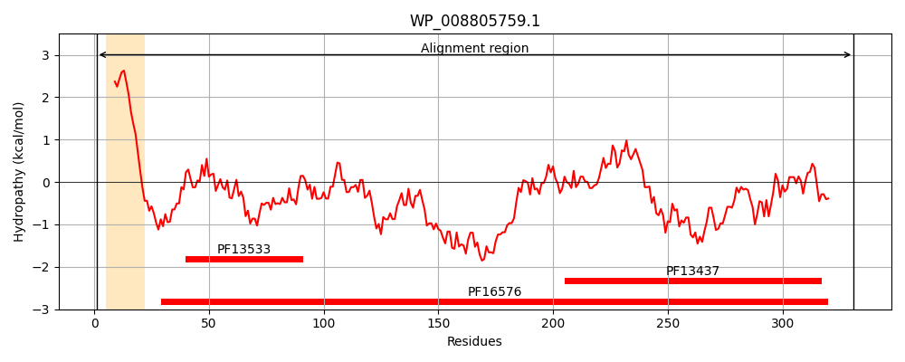
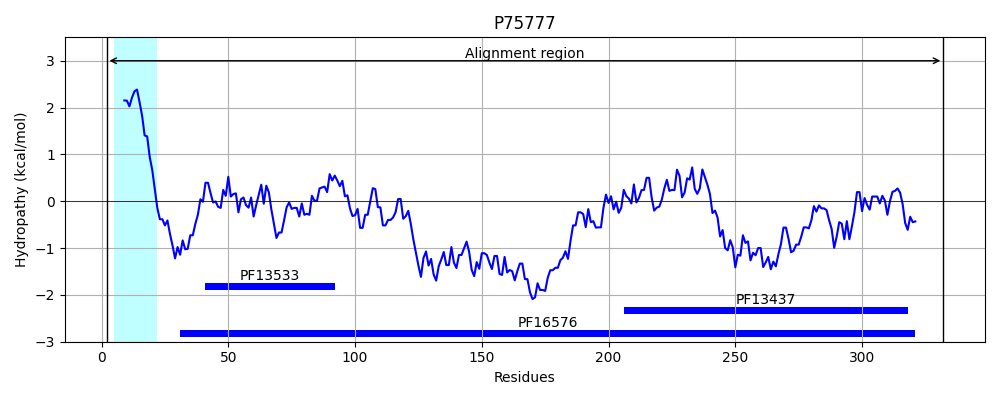
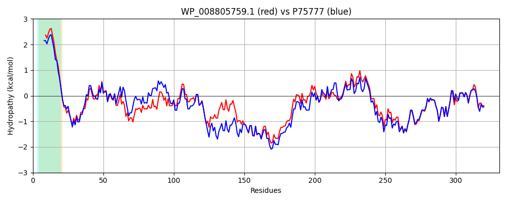

Hit Accession: P75777
Hit TCID: 3.A.1.105.15
Hit Description: gnl|BL_ORD_ID|11405 gnl|TC-DB|P75777|3.A.1.105.15 UPF0194 membrane protein YbhG OS=Escherichia coli (strain K12) GN=ybhG PE=3 SV=1
Mach Len: 331
e:0.000000
Query TMS Count : 1
Hit TMS Count: 1
TMS-Overlap Score: 0.850000
Predicted Substrates:CHEBI:23888;drug
BLAST Alignment:
Score: 1349 , Bit scores: 524 bits, E-value: 0.0e+00, Alignment length: 331, Percentage identity: 80
Query: 1 MKKPVVVILLIVILLAALGGGWWWYQSSRQQPLTLYGNVDIRTVNMSFRVGGRLASLTVDEGDSIRAGQTLGELDRAPYENALLQAQANVSTAQAQYDLMMAGYRAEEIAQAAAAVKQAQAAYDYAQNFYQRQLGLRASSAISANDLENARSSRDQAQATLKSAQDKLRQYRAGNRPQEIAQAKASLEQAQAALAQAKLDLHDTVLTAPSDGTLMTRAVEPGTMLNAGGTVLTLSLTHPVWVRAYVDEKNLGQAQPGREVLLYTDSRPDKPYHGKIGFVSPSAEFTPKTVETPDLRTDLVYRLRIVVNDADGALRQGMPVTVSFNHGNGHE 331
MKKPVV+ L +V+L A + GG+WWYQS + LTLYGNVDIRTVN+SFRVGGR+ SL VDEGD+I+AGQ LGELD PYE AL+QA+A VS AQAQYDLM+AGYR EEIAQAAAAVKQAQAAYDYAQNFY RQ GL S ISANDLENARSSRDQAQATLKSAQDKLRQYR+GNR Q+IAQAKASLEQAQA LAQA+L+L D+ L APSDGTL+TRAVEPGT+LN GGTV T+SLT PVWVRAYVDE+NL QAQPGR+VLLYTD RPDKPYHG+IGFVSP+AEFTPKTVETPDLRTDLVYRLRIVV DAD ALRQGMPVTV F GHE
Sbjct: 2 MKKPVVIGLAVVVLAAVVAGGYWWYQSRQDNGLTLYGNVDIRTVNLSFRVGGRVESLAVDEGDAIKAGQVLGELDHKPYEIALMQAKAGVSVAQAQYDLMLAGYRNEEIAQAAAAVKQAQAAYDYAQNFYNRQQGLWKSRTISANDLENARSSRDQAQATLKSAQDKLRQYRSGNREQDIAQAKASLEQAQAQLAQAELNLQDSTLIAPSDGTLLTRAVEPGTVLNEGGTVFTVSLTRPVWVRAYVDERNLDQAQPGRKVLLYTDGRPDKPYHGQIGFVSPTAEFTPKTVETPDLRTDLVYRLRIVVTDADDALRQGMPVTVQFGDEAGHE 332 | Protein Hydropathy Plots: |
|---|
|  |  |
Pairwise Alignment-Hydropathy Plot:
|
|---|
|  |